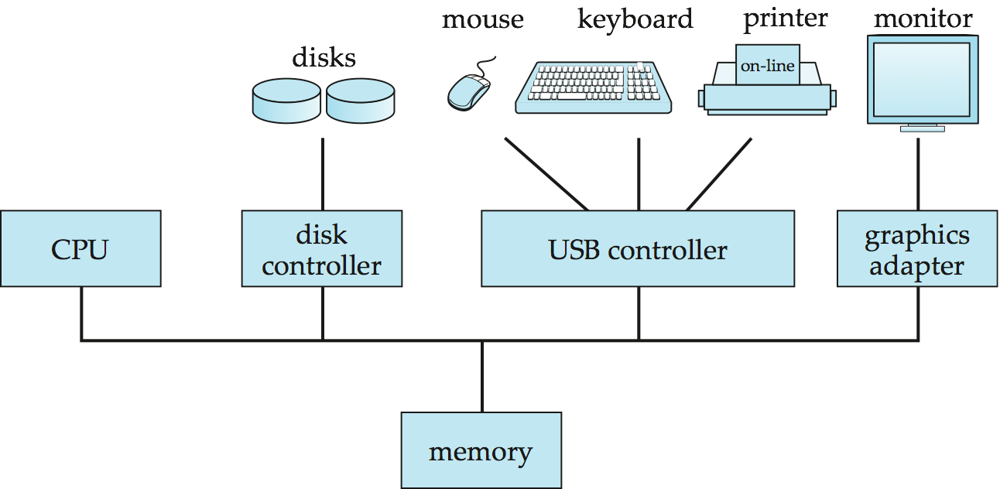

Database an Overview

What is a database?
A database (DB) is a collection of data that lives for a long time. Many systems fit this definition, for example, a paper-based file system, a notebook, or even a string with knobs for counting.
A Database Management System (DBMS) is a system (software) that provides an interface to database for information storage and retrieval. We are more interested in software systems rather than manual systems because they can do the job more efficiently. The common features of a DBMS includes
• capacity for large amount of data
• an easy to use interface language (SQL-structured query language)
• efficient retrieval mechanisms
• multi-user support
• security management
• concurrency and transaction control
• persistent storage with backup and recovery for reliability
The users of a database assume difference roles such as
• end user - application programmers that use the DB as a storage subsystem
• designer - application programmers and/or business analysts who design the layout of the DB
• administrator - operators who maintain the heath and efficiency of the DB
• implementor - programmers who maintain and develop the DBMS
The key concepts of database includes
• schema - the structure and the constraints of data
• data - the actual content of the DB representing information
• data definition language - used to specify the schema
• data manipulation and query language - used to change the data and query them
Schema are meta-data that describe data. Such meta-data can describe the structure of the data which ranges from strictly enforced structure (relational) to semi-structure (XML) and free-structured data (text files). Before we define the schema we must decide on a model of the data - a metaphor. For relational database n-ary relation is used to model data.
links: